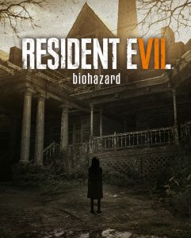
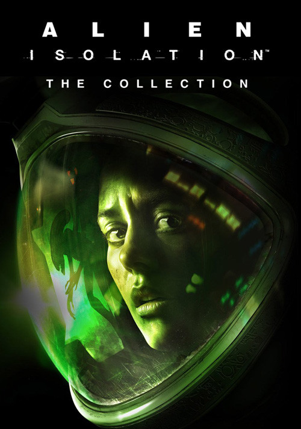
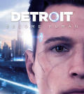
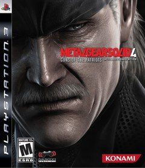
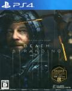
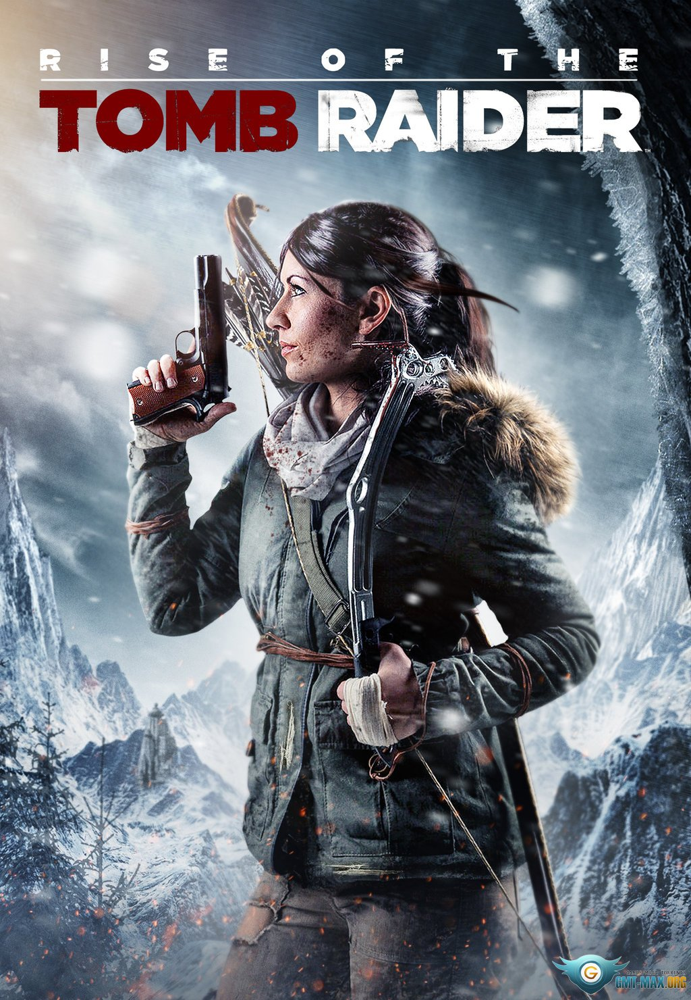
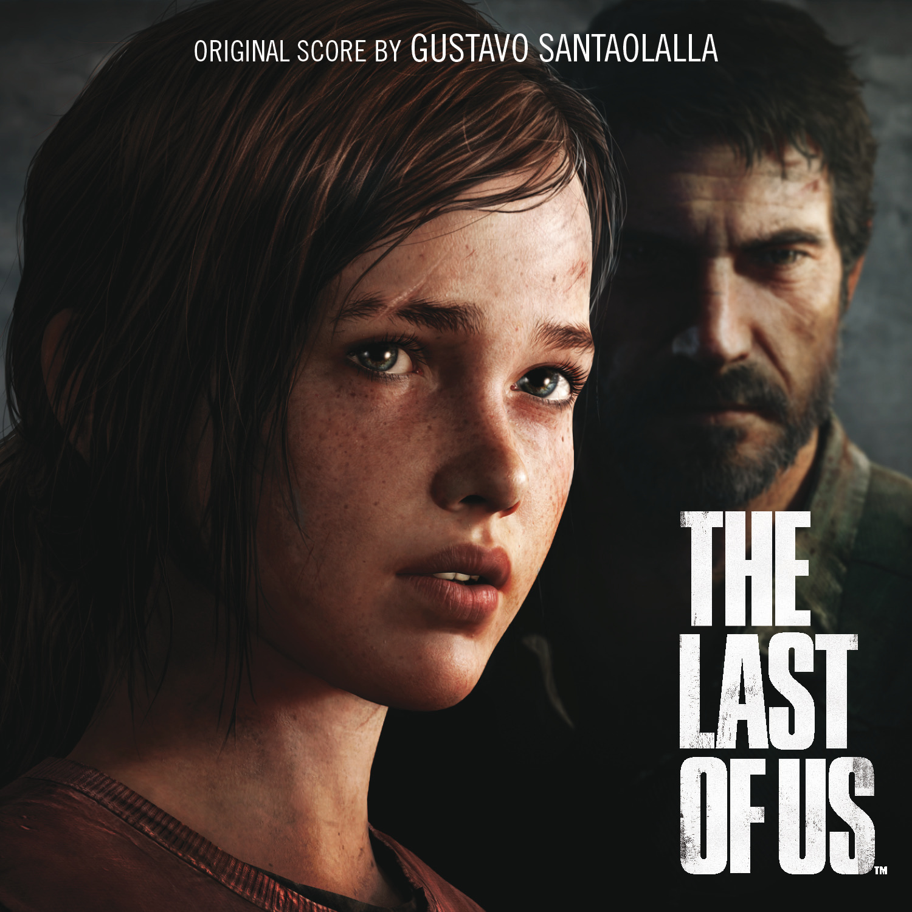

Pari's Video Game Presentation
I'm a Playstation gamer, and have been since I was about 4 years old. I enjoy playing games with a fear and/or adventure element. Over the years, I developed a few favourites:
| Image | Title | Description |
|---|---|---|
|  | Resident Evil 7: Biohazard (2017) | The player controls Ethan Winter, an ordinary man must embark on a search to find his missing wife that leads him to an abandoned house where a mysterious family lives who harbor an evil secret within the house and themselves. |
|  | Alien Isolation (2014) | A first person survival horror adventure set fifteen years after the events of Alien (1979), Ripley's daughter becomes trapped on an alien-infested space station which holds answers to the mystery of her mother's disappearance. |
|  | Detroit: Become Human (2018) | An adventure game that follows three androids : Kara, who escapes her owner to explore her newfound sentience and protect a young girl; Connor, whose job is to hunt down sentient androids; and Markus, who devotes himself to releasing other androids from servitude. |
|  | Metal Gear Solid 4: Guns of the Patriots (2008) | When the nations of the world rely upon private military companies to fight their battles for them, renegade Liquid Ocelot emerges as the head of a potent coalition of mercenary powers. Solid Snake returns to save the world once again. |
|  | Death Stranding (2019) | Deliveryman Sam Porter must travel across a ravaged wasteland and reconnect the city states of America formed after a mysterious apocalyptic event dubbed 'death stranding' left the world in ruins and plagued by supernatural tar creatures. |
|  | Rise of the Tomb Raider (2015) | Lara Croft continues her late father's research, trekking across Siberia in search of the answers her father couldn't find, facing off against an ancient and ruthless shadow organisation. |
 |
Assassin's Creed: Origins (2017) | A prequel to the Assassin's Creed Franchise set in Egypt from 48 BC where Bayek, a Medjay, begins the foundation of the Assassin's Brotherhood. |
|  | The Last of Us (2013) | In a hostile, post-pandemic world, Joel and Ellie, brought together by desperate circumstances, must rely on each other to survive a brutal journey across what remains of the United States. |
Built by Pari Nathali